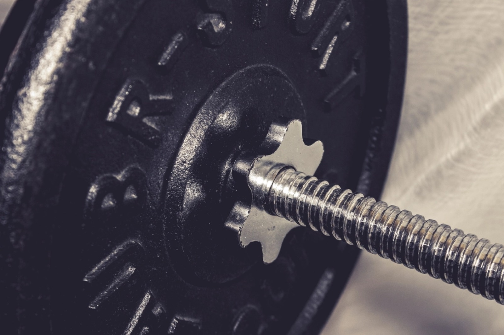
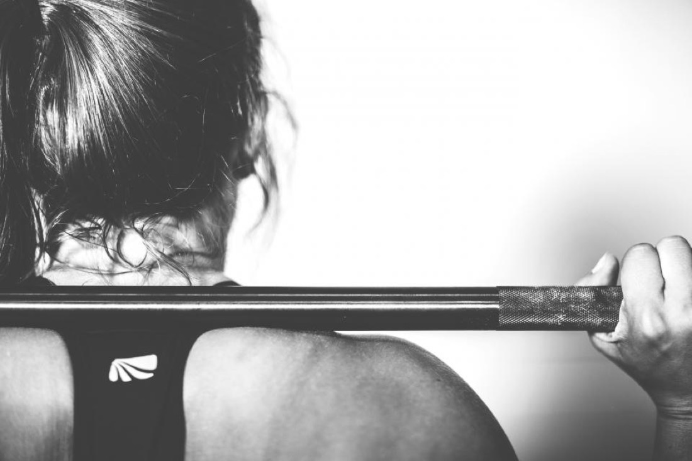
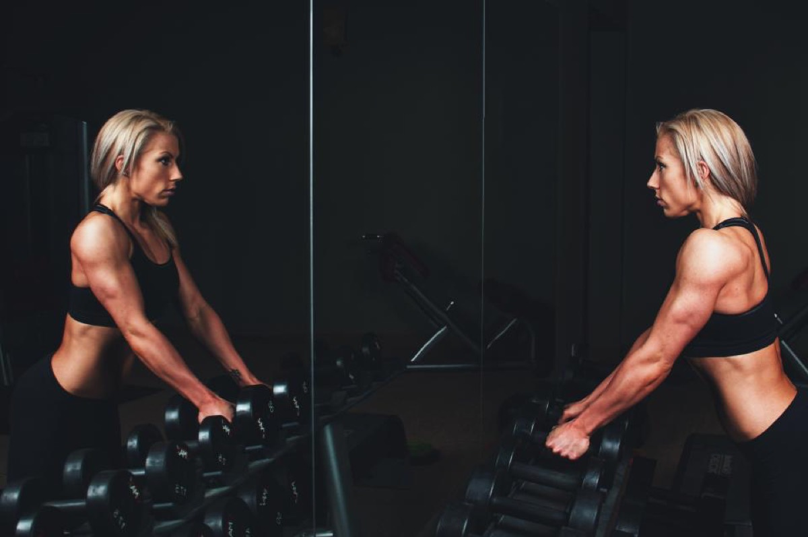

Programs built on exercise science
Training programs used by college athletes, tailored for anyone who wants real results.
Three things decide whether you grow
I approach every routine with the same philosophy. What changes is how it gets implemented for you.
Periodization
Your training is organized into blocks with a purpose. Volume, intensity, and recovery are planned across weeks so that each phase sets up the next one instead of erasing it.
Progressive overload
The single variable that separates training from exercising. We add load, reps, or quality every week in a way your body can actually recover from, and we write it all down.
Exercise selection
Movements picked for your leverages, injury history, and available equipment. If a lift hurts you or does nothing for your goal, it is not in your program.
What you actually get
No PDF template with your name typed at the top. Every program is written for one person.
- A 12 week plan built around your body, your schedule, and your goals.
- Video demonstrations on every workout so you are never guessing at form.
- Coaching notes on each session explaining what the work is for.
- Session by session tracking so progress is a number, not a feeling.
- Nutrition coaching that supports the training instead of fighting it.
- Accountability from someone who notices when you go quiet.

From first call to first PR
Schedule your free consultation
Thirty minutes, no obligation. We talk through your goals, your current routine, what has and has not worked, and whether we are a good fit for each other.
Start your custom training plan
I write your 12 week program and walk you through it. You know what every session is for before you do it.
Watch your fitness grow
We track every lift. You see the bench go from 135 to 185 and the waist go from 36 to 33, and you feel the difference long before either number lands.

Is your current plan working?
Without programming and coaching, another year looks a lot like the last one. Here is what that actually costs.
- Adults lose 3% to 8% of muscle mass per decade after 30.3 If you are 22 and not building now, you are already behind.
- By 32, carrying groceries upstairs feels harder. By 42, keeping up with your kids at the park is work.
- Physical inactivity increases dementia risk and accelerates cognitive decline.1
- Another year of curls, wondering why your arms are not growing, while the scale climbs and your strength stays flat.
Frequently asked questions
How much does personal training cost?
I offer a range of training packages depending on your goals and schedule. The free consultation is where we work out which option fits your needs and your budget.
Do I need to be in shape before starting?
No. That is exactly why you need a trainer. I work with beginners who have never touched a barbell and with people who have been stuck at the same numbers for years. I meet you where you are and build from there.
If you are a seasoned lifter who just wants a second set of eyes on your programming, I am glad to help with that too. Most of my clients, though, are starting or restarting.
How long does it take to see results?
Most clients notice strength gains within two to three weeks and visible muscle growth within eight to twelve. Resistance training also shows a moderate effect on depressive symptoms across 33 randomised trials, so the mood change often arrives before the mirror does.2
What makes your training different from other trainers?
I apprenticed at a strength and conditioning gym where we programmed for high school and college athletes. I use the same periodization and progressive overload principles with my clients. Every exercise, set, and rep scheme comes from exercise science rather than guesswork or whatever is trending.
Can I build muscle and lose fat at the same time?
Yes, especially if you are new to proper strength training. Beginners can gain muscle while losing fat during their first six to twelve months. I build programs that drive progressive overload for growth while managing nutrition for fat loss.
How often should I train each week?
Three to four sessions a week is the range I recommend for most people. That gives your muscles enough stimulus to grow with enough room to recover. Your exact frequency depends on your schedule, your recovery, and your goals.
What equipment do I need?
At a gym, we use barbells, dumbbells, cables, and the basics available almost everywhere. At home, I can design around whatever you have, though a barbell, plates, and a rack will get you the furthest.
Is strength training safe for beginners?
Yes, when it is done correctly. I teach form on every exercise and start you at weights appropriate for your current strength. Supervised strength training has one of the lowest injury rates of any physical activity when technique is sound.3
Will lifting weights make me bulky?
Not unless that is your goal and you eat in a large surplus for months. Building noticeable size takes years of consistent training and deliberate nutrition. Most people lifting three to four times a week end up lean and athletic, not bulky.
Is personal training right for me?
If you have been trying on your own without results, that is the exact problem training solves. If you do not know how to program, struggle with form, or need someone holding you accountable, a trainer gets you there faster than figuring it out alone. Book a free consultation and we will find out whether we are a good fit.
Where the numbers come from
- World Health Organization (2024). Physical activity. WHO fact sheet. who.int
- Gordon, B. R., et al. (2018). Association of efficacy of resistance exercise training with depressive symptoms: meta-analysis and meta-regression. JAMA Psychiatry, 75(6), 566 to 576.
- Booth, F. W., Roberts, C. K., & Laye, M. J. (2012). Lack of exercise is a major cause of chronic diseases. Comprehensive Physiology, 2(2), 1143 to 1211.
- Noetel, M., et al. (2024). Effect of exercise for depression: systematic review and network meta-analysis of randomised controlled trials. BMJ, 384, e075847. (218 studies, 14,170 participants.)
- Lee, I. M., et al. (2012). Effect of physical inactivity on major non-communicable diseases worldwide. The Lancet, 380(9838), 219 to 229.
Corrections made against the live site. Each figure below was checked against the source paper and changed here:
- "Neville et al., 2024" does not appear to exist. The study described (218 trials, 14,170 participants) is Noetel et al., 2024 in the BMJ.
- "62% reduction in depression symptoms" is not a finding of that paper. Noetel reports Hedges' g, not percentages. Strength training was g −0.49; the −0.62 figure belongs to walking and jogging, a different modality.
- "Same effect size as antidepressant medication" has been removed. That is a clinical comparison, and it is not one a training site should be making.
- "23% higher physical self worth" and "improvements in self efficacy" were both credited to Gordon et al., 2018. That paper measures depressive symptoms only; it does not assess self worth, self esteem, or self efficacy. Replaced with its actual finding (∆ 0.66 across 33 trials, number needed to treat 4).
- "Life expectancy increases of 2 to 5 years" credited to Lee et al., 2012. That paper estimates 0.68 years (range 0.41 to 0.95) of global life expectancy from eliminating inactivity.
- "40% better sleep quality scores" carried no citation at all and is now stated as Joe's own observation rather than a statistic.
Still unverified, and needing Joe's sources: the 250,000 annual US deaths figure, "35% of heart disease deaths", "19 chronic conditions", and "3% to 8% of muscle mass per decade".
Ready to start your transformation?
One call, thirty minutes, no obligation.
(501) 860-8045